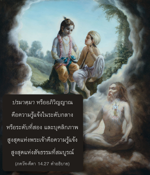
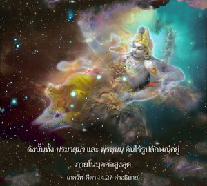

และข้าคือฐานของ พฺรหฺมนฺ อันไร้รูปลักษณ์ซึ่งไม่รู้จักตาย ไม่สูญสิ้น เป็นอมตะ และเป็นสถานภาพพื้นฐานเดิมแห่งความสุขสูงสุด



สถานภาพพื้นฐานเดิมของพฺรหฺมนฺ คือ ความไม่ตาย ความไม่สูญสิ้น เป็นอมตะ และมีความสุข พฺรหฺมนฺ คือความรู้แจ้งทิพย์ขั้นแรก ปรมาตฺมา หรืออภิวิญญาณคือความรู้แจ้งในระดับกลาง หรือระดับที่สอง และบุคลิกภาพสูงสุดแห่งพระเจ้าคือความรู้แจ้งสูงสุดแห่งสัจธรรมที่สมบูรณ์ ดังนั้น ทั้ง ปรมาตฺมา และพฺรหฺมนฺ อันไร้รูปลักษณ์อยู่ภายในบุคคลสูงสุด องค์ภควานฺได้อธิบายไว้ในบทที่เจ็ดว่า ธรรมชาติวัตถุเป็นปรากฏการณ์ของพลังงานเบื้องต่ำขององค์ภควานฺ พระองค์ทรงทำให้ธรรมชาติเบื้องต่ำ หรือธรรมชาติวัตถุตั้งครรภ์ด้วยละอองแห่งธรรมชาติเบื้องสูง และนั่นคือการสัมผัสทิพย์ในธรรมชาติวัตถุ และค่อยๆ เจริญขึ้นมาจนถึงแนวคิด พฺรหฺมนฺ แห่งองค์ภควานฺ การบรรลุถึงแนวคิดชีวิตแห่ง พฺรหฺมนฺ นี้เป็นระดับแรกในความรู้แจ้งแห่งตน ในระดับนี้บุคคลผู้รู้แจ้ง พฺรหฺมนฺ นี้เป็นระดับแรกในความรู้แจ้งแห่งตน ในระดับนี้บุคคลผู้รู้แจ้ง พฺรหฺมนฺ เป็นทิพย์เหนือสถานภาพทางวัตถุ แต่จะไม่มีความสมบูรณ์อย่างแท้จริงในความรู้แจ้ง พฺรหฺมนฺ หากปรารถนาจะสามารถอยู่ในสถานภาพ พฺรหฺมนฺ ต่อไป และค่อยๆ เจริญขึ้นมาถึงความรู้แจ้ง ปรมาตฺมา จากนั้นก็รู้แจ้งถึงบุคลิกภาพสูงสุดแห่งพระเจ้า มีตัวอย่างเช่นนี้มากมายในวรรณกรรมพระเวท เช่น กุมาร ทั้งสี่ ตอนแรกสถิตในแนวคิดแห่งสัจธรรม พฺรหฺมนฺ อันไร้รูปลักษณ์ และค่อยๆ เจริญขึ้นมาจนถึงระดับแห่งการอุทิศตนเสียสละรับใช้ ผู้ที่ไม่สามารถพัฒนาตนเองให้อยู่เหนือแนวคิดอันไร้รูปลักษณ์แห่ง พฺรหฺมนฺ จะมีความเสี่ยงในการตกลงต่ำ ใน ศฺรีมทฺ-ภาควตมฺ กล่าวว่าถึงแม้บุคคลอาจเจริญขึ้นมาถึงระดับ พฺรหฺมนฺ อันไร้รูปลักษณ์ หากไม่พัฒนาให้สูงขึ้นเนื่องจากไม่มีข้อมูลแห่งองค์ภควานฺปัญญาของเขาจะไม่ผ่องใสโดยสมบูรณ์ ฉะนั้น ถึงแม้ว่าจะเจริญมาถึงระดับ พฺรหฺมนฺ ก็ยังมีโอกาสตกลงต่ำหากไม่ปฏิบัติในการอุทิศตนเสียสละรับใช้ต่อพระองค์ ในภาษาพระเวทกล่าวไว้เช่นกันว่า รโส ไว สห์, รสํ หฺยฺ เอวายํ ลพฺธฺวานนฺที ภวติ “เมื่อเข้าใจบุคลิกภาพแห่งพระเจ้าองค์กฺฤษฺณผู้ทรงเป็นแหล่งกำเนิดแห่งความสุข เขาจะมาเป็นผู้มีความปลื้มปีติสุขทิพย์อย่างแท้จริง” (ไตตฺติรีย อุปนิษทฺ 2.7.1) องค์ภควานฺทรงเปี่ยมไปด้วยความมั่งคั่งหกประการ และเมื่อสาวกเข้าพบพระองค์จะมีการแลกเปลี่ยนความมั่งคั่งทั้งหกประการนี้ ผู้รับใช้พระเจ้าแผ่นดินได้รับความรื่นเริงเกือบระดับเดียวกันกับพระเจ้าแผ่นดิน ดังนั้น ความสุขนิรันดร ความสุขที่ไม่มีวันสูญสลาย และชีวิตอมตะรวมอยู่ในการอุทิศตนเสียสละรับใช้เช่นเดียวกัน ความรู้แจ้ง พฺรหฺมนฺ หรือความเป็นอมตะ หรือความไม่รู้จักตายรวมอยู่ในการอุทิศตนเสียสละรับใช้ ผู้ที่ปฏิบัติในการอุทิศตนเสียสละรับใช้มีสิ่งเหล่านี้อยู่ในตัวเรียบร้อยแล้ว
สิ่งมีชีวิตถึงแม้เป็น พฺรหฺมนฺ โดยธรรมชาติมีความปรารถนาเป็นเจ้าเหนือโลกวัตถุด้วยเหตุนี้จึงตกต่ำลง ในสถานภาพพื้นฐานเดิมของตนสิ่งมีชีวิตอยู่เหนือสามระดับแห่งธรรมชาติวัตถุ แต่การที่มาคบหาสมาคมกับธรรมชาติวัตถุจึงทำให้ถูกพันธนาการอยู่ในระดับต่างๆ แห่งธรรมชาติวัตถุ เช่น ความดี ตัณหา และอวิชชา เนื่องจากการมาคบหาสมาคมกับสามระดับเหล่านี้ความปรารถนาที่จะครอบครองโลกวัตถุจึงมีอยู่ เมื่อปฏิบัติในการอุทิศตนเสียสละรับใช้ในกฺฤษฺณจิตสำนึกอย่างสมบูรณ์เราจะสถิตในสถานภาพทิพย์ทันที และความปรารถนาที่ผิดกฎหมายในการมาควบคุมธรรมชาติวัตถุจะถูกขจัดไป ดังนั้นวิธีแห่งการอุทิศตนเสียสละรับใช้เริ่มจากการสดับฟัง การสวดภาวนา การระลึกถึง ซึ่งมีอยู่เก้าวิธีเพื่อรู้แจ้งถึงการอุทิศตนเสียสละรับใช้ที่ได้อธิบายไว้นั้นเราควรฝึกปฏิบัติร่วมกับเหล่าสาวก จากการมาร่วมกันและด้วยอิทธิพลของพระอาจารย์ทิพย์ความปรารถนาที่จะครอบครองธรรมชาติวัตถุจะค่อยๆถูกขจัดไป และเราจะสถิตอย่างมั่นคงในการรับใช้ทิพย์ด้วยความรักต่อองค์ภควานฺ วิธีนี้ได้อธิบายจากโศลกที่ยี่สิบสองจนมาถึงโศลกสุดท้ายของบทนี้ การอุทิศตนเสียสละรับใช้ต่อองค์ภควานฺเป็นสิ่งที่ง่ายมาก เราควรปฏิบัติในการรับใช้พระองค์เสมอ ควรรับประทานอาหารส่วนที่เหลือหลังจากที่ได้ถวายต่อพระปฏิมา แล้วดมกลิ่นหอมของดอกไม้ที่ถวายต่อพระบาทรูปดอกบัวขององค์ภควานฺ มองดูสถานที่ต่างๆ ที่พระองค์ทรงแสดงลีลาทิพย์ อ่านกิจกรรมต่างๆ ของพระองค์ รวมถึงการแลกเปลี่ยนความรักของพระองค์กับเหล่าสาวก สวดภาวนาคลื่นเสียงทิพย์ หเร กฺฤษฺณ หเร กฺฤษฺณ กฺฤษฺณ กฺฤษฺณ หเร หเร / หเร ราม หเร ราม ราม ราม หเร หเร เสมอ และถือวันอดอาหารเพื่อระลึกถึงการปรากฏ และการจากไปของพระองค์ และบรรดาสาวกของพระองค์ ด้วยการปฏิบัติตามวิธีการเหล่านี้ ทำให้เราไม่ยึดติดกับกิจกรรมต่างๆ ทางวัตถุทั้งหมดโดยสมบูรณ์ ดังนั้น ผู้ที่สามารถสถิตใน พฺรหฺม-โชฺยติรฺ หรือแนวคิดแห่ง พฺรหฺมนฺ อันหลากหลายต่างๆ มีความทัดเทียมกันกับบุคลิกภาพสูงสุดแห่งพระเจ้าในเชิงคุณสมบัติ